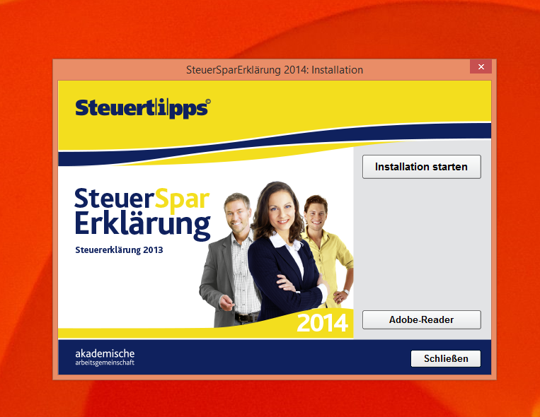
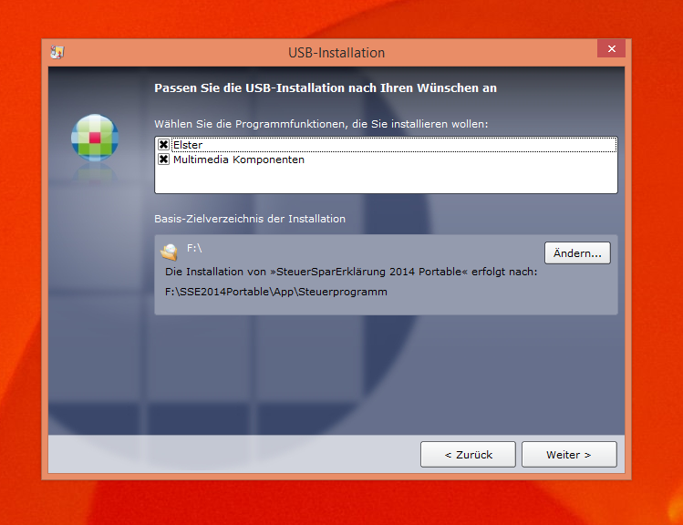
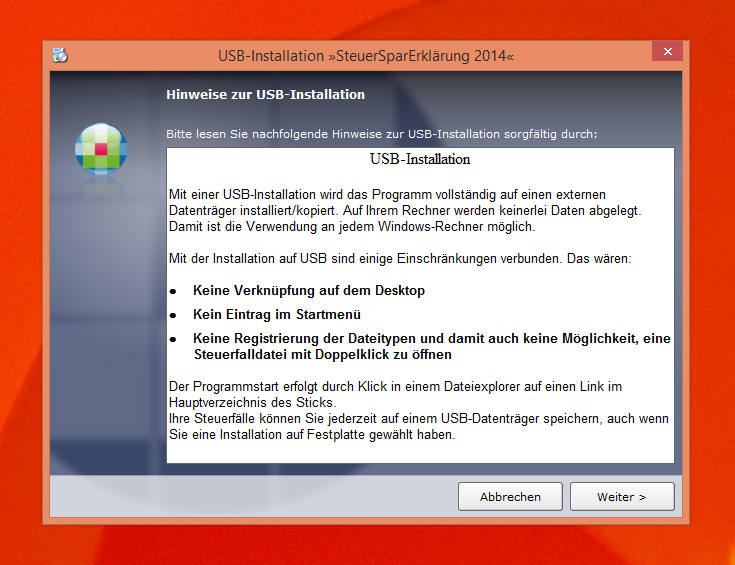
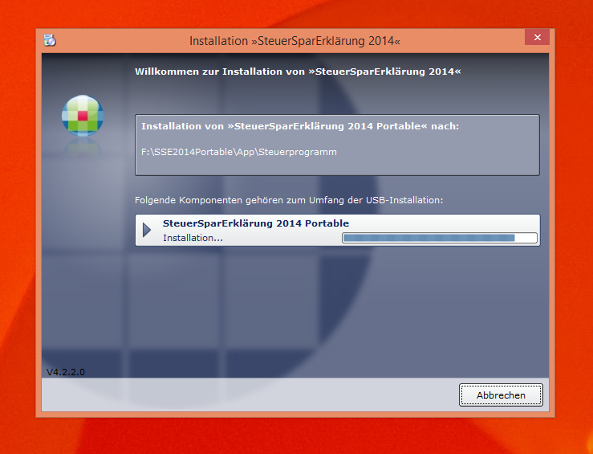
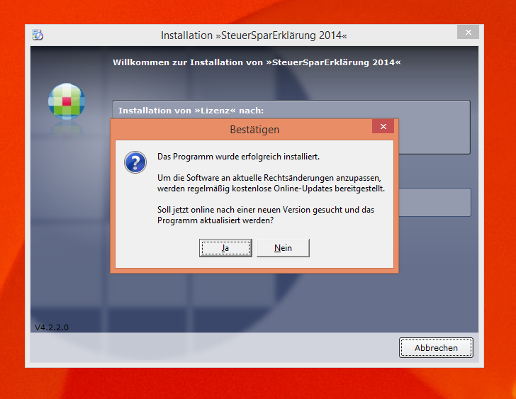
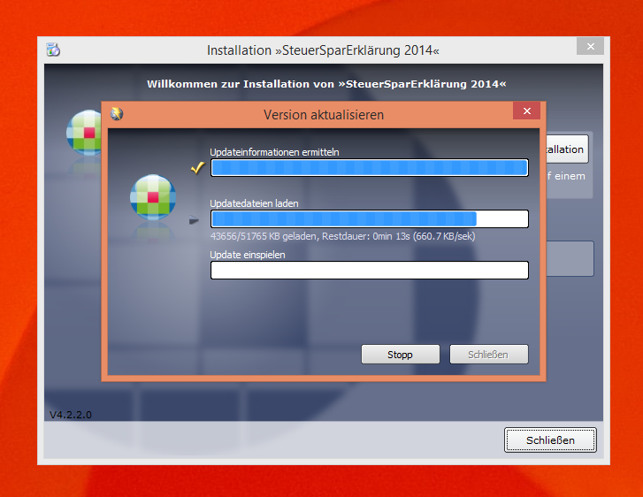

Nach dem Einlegen der CD öffnete sich das Autostart-Menü. Nach einem Druck auf "Installation starten" wurde ich auf meinem Windows 8 betriebenen System auf die nächste Maske geschickt.

Ich war sehr überrascht und erfreut über eine USB Installation. Dadurch ist es möglich seine Steuererklärung an beliebigen Rechner zu bearbeiten. Ganz großer Pluspunkt von mir, da man so sich entweder im Abeitszimmer in Ruhe oder für die letzten Kleinigkeiten auf der Couch mit der Steuererklärung auseinander setzen kann. Kleiner Spoiler: Funktioniert super. Habe ich schon getestet und funktioniert wunderbar, ohne noch zusätzliche Software zu installieren.

Der Bildschirm hat einem kurz noch auf die Besonderheiten bei der Installation auf einen USB Stick hingewiesen.

Soooooo spannend ist die Installation :)

Besonders toll auch die Update Funktion nach der erfolgreichen Installation. Kein Problem, dass die Installation auf einem USB Stick ist. Gleich mal noch ein Update gemacht.

Und auch das hat mit Internetzugang nicht lange gedauert und die Software war up-to-date.